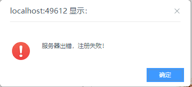
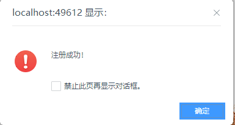

咳咳！小白的第一篇随笔
实习期的第一项任务-》完成一个注册功能
所有功能都都可以正常运行了，到了套界面这一步骤的时候，等我套好注册界面，再点提交给出了两个提示
第一个提示：

紧接着第二个提示：

找了好久才找到，原因是在提交按钮那里调用了两次save（）函数，对于js还是相当懵懂的，不，对前端还是相当懵懂的
<a href="javascript:save()" class="btng" onclick="javascript:save()" id="PhoneReg" >立即注册</a>在后台有一个验证字段的唯一性，每次运行提交两次，就会出现这样的错误了吧
解决办法就是把其中一个去掉，我把
onclick="javascript:save()" 去掉了，然后只要验证通过，就只会提示一次注册成功
不过现在还有一个小问题，就是为什么不是先提示注册成功，而是先提示注册失败！下篇文章在贴出来吧